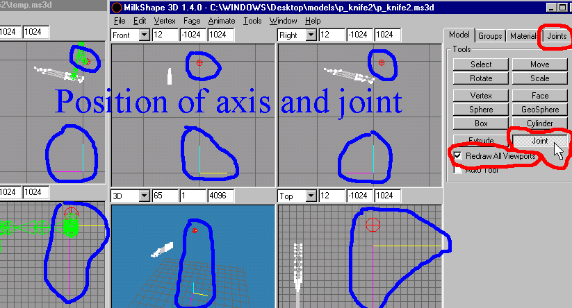

|
|
The reason for two Milkshapes is that we will be deleting the Skeleton from the "C:WINDOWS\Desktop\models\p_knife2.msd3" program. In the "Joints" list box, click on the Biped01" joint as shown in Figure 1.12. Press the "Delete" button on the "keyboard" to delete it. The entire skeleton will be deleted in a single operation because of it being the "root" joint. Now you will be looking at the "C:WINDOWS\Desktop\models\temp.ms3d" for its position of the first joint or "root" joint that you will be creating. Pay particular attention to this. This is the "COM" that we talked about and the game engine will pay attention to it for placement in game when we will be completing the entire skeleton for a character model in a later tutorial.
To create your "root" joint, switch to the "Model" rollout and click on the "Joint" button. Then click in the same relative position as seen in the "C:WINDOWS\Desktop\models\temp.ms3d" but in your "C:WINDOWS\Desktop\models\p_knife2.ms3d" program. If necessary count the grid positions in "C:WINDOWS\Desktop\models\temp.ms3d" and try to match it in "C:WINDOWS\Desktop\models\p_knife2.ms3d." (See Figure 1.14).

Figure 1.14 Creating the root or "COM" Joint
We will be renaming this new joint. Switch to the "Joints" rollout and click on the new joint that you just created and double click in the name text box next to the "Rename" button so that the name is highlighted for overtype mode. Type in "Bip01" and pay particular attention to the capitalization of the joint naming convention as this matters in the compilation of models when dealing with "QC" files. If they are not named exactly the same thourghout your models designs, parts will not fit up correctly or may not even appear in game or cause game crashes. One of the most disappointing things that will happen to you if you do not name them correctly, is that what is called "Attachments." These "Attachments" are responsible for positions of things like "Muzzel Flash" points. Now you know why some guns that have been created for a new weapon model, seem to shoot from the stomach or head or some other weird place ingame! As an example of the "Attachment" look at the "v_9mmhandguns.qc" file. It has a line that reads:
// 1 attachments
$attachment 0 "Bip01 R Hand" 10.000000 2.250000 4.250000
You might experience and error during compilation that will say:
************ ERROR ************
unknown attachment link 'Bip01 R Hand'
Now this should become obvious to you as to why this error will occur, either you have named a bone wrong, or you have no assignments to this bone.
You will continue to create the rest of the Skeleton in the same fashion as outline in the preceding paragraphs until you have all the necessary joints created. Remember to switch back and forth to the other Milkshape window
You will assign all the vertices of the knife to the "Knife" joint, by switching to the "Joint" rollout and clicking on the "Knife" selection in the list box, then clicking the "Assign" button.
At this point we are now ready to export our file as a Valve smd. Select "File->Export->Half-Life SMD..." and type in the "File name:" text box: "p_knife2(ref)" then click the "Save" button. Make sure you have the "Reference" Radio button checked like Figure 1.15 shows.

Figure 1.15 Exporting the SMD Reference file
|
|